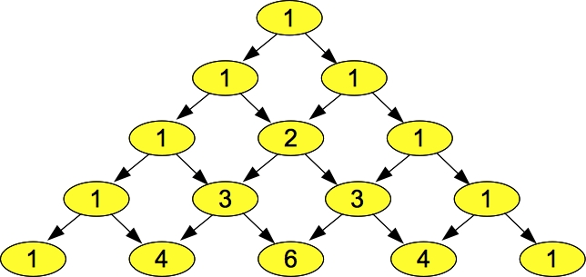
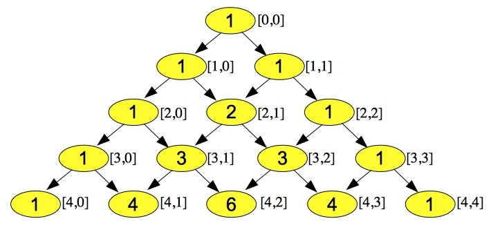

Let's suppose that I want to represent a matrix of integers in C++. The best way to do that, is to use a vector of integer vectors.
First, let me introduce you to typedef. It is a way in C/C++ to rename a data type with your own name. For example, take a look at fred.cpp:
#include <iostream>
using namespace std;
typedef int Fred;
main()
{
Fred i;
i = 5;
cout << "The Fred named i is equal to " << i << endl;
}
|
The typedef statement says that you can declare a variable to be of type "Fred," and that when you do it, it will be an int. Thus, when we declare "Fred i", that is the same as saying "int i":
UNIX> fred The Fred named i is equal to 5 UNIX>While Fred's aren't very useful, typedef's are extremely useful. The program vdm.cpp shows how we can use a typedef to declare a vector of integer vectors:
#include <vector>
#include <iostream>
#include <sstream>
#include <cstdlib>
#include <cstdio>
using namespace std;
typedef vector <int> IVec;
main(int argc, char **argv)
{
int r, c, p, i, j, base, val;
istringstream ss;
vector <IVec> vdm;
if (argc != 4) { cerr << "usage: vdm rows cols prime\n"; exit(1); }
ss.clear(); ss.str(argv[1]); if (!(ss >> r)) { cerr << "Bad rows\n"; exit(1); }
ss.clear(); ss.str(argv[2]); if (!(ss >> c)) { cerr << "Bad cols\n"; exit(1); }
ss.clear(); ss.str(argv[3]); if (!(ss >> p)) { cerr << "Bad prime\n"; exit(1); }
vdm.resize(r);
for (i = 0; i < vdm.size(); i++) {
base = i+1;
val = 1;
for (j = 0; j < c; j++) {
vdm[i].push_back(val);
val = (val * base) % p;
}
}
for (i = 0; i < vdm.size(); i++) {
for (j = 0; j < vdm[i].size(); j++) printf(" %4d", vdm[i][j]);
cout << endl;
}
}
|
This program takes three command line arguments: r, c and p. It then creates a r * c "Vandermonde" matrix over the field defined by the prime number p? What's a "field?" In this case, it is the numbers 0 through p-1, where addition, subtraction and multiplication are all modulo p. Division is defined to be the inverse of multiplication, but don't worry about it, since it doesn't really matter in this lecture.
A Vandermonde matrix is one that has the value (i+1)j in row i and column j (everything is zero-indexed). It has some very special properties concerning invertibility of submatrices, but again, we don't care too much -- we just want to create one and print it.
Take a look at how vdm is defined: vector
UNIX> vdm 1 1 101
1
UNIX> vdm 3 3 101
1 1 1
1 2 4
1 3 9
UNIX> vdm 3 5 101
1 1 1 1 1
1 2 4 8 16
1 3 9 27 81
UNIX> vdm 3 5 7
1 1 1 1 1
1 2 4 1 2
1 3 2 6 4
UNIX>
You should be able to verify to yourselves that all of the above matrices are Vandermonde matrices
in their given fields.
|  |
The numbers are arranged in rows, where row i has i+1 elements (as always, our lives are zero-indexed). The first and last element in each row is equal to one. Each other element is the sum of the two elements above it. Suppose we want to write a program to generate Pascal's triangle in a data structure. One easy way to do this is to generate it as a vector of integer vectors, where element i of the vector is a vector containing the elements of row i. We can visualize it below:
|  |
Scanning for a pattern, let's consider the j-th element in row i. If it is the first or last element in the row, it will equal one. Otherwise, you can see from the picture that it is equal to the sum of elements j-1 and j in row i-1. That gives us a nice way to construct the triangle. The code is in pascal.cpp:
#include <vector>
#include <iostream>
#include <sstream>
#include <cstdlib>
#include <cstdio>
using namespace std;
typedef vector <int> IVec;
main(int argc, char **argv)
{
int r, i, j;
istringstream ss;
vector <IVec> pascal;
if (argc != 2) { cerr << "usage: pascal rows\n"; exit(1); }
ss.clear();
ss.str(argv[1]);
if (!(ss >> r)) { cerr << "Bad rows\n"; exit(1); }
pascal.resize(r);
for (i = 0; i < pascal.size(); i++) {
for (j = 0; j <= i; j++) {
if (j == 0 || j == i) {
pascal[i].push_back(1);
} else {
pascal[i].push_back(pascal[i-1][j-1] + pascal[i-1][j]);
}
}
}
for (i = 0; i < pascal.size(); i++) {
for (j = 0; j < pascal[i].size(); j++) printf(" %4d", pascal[i][j]);
cout << endl;
}
}
|
When we run it, it's pictured a little differently than above, but you should see that it is clearly the same triangle:
UNIX> pascal 10
1
1 1
1 2 1
1 3 3 1
1 4 6 4 1
1 5 10 10 5 1
1 6 15 20 15 6 1
1 7 21 35 35 21 7 1
1 8 28 56 70 56 28 8 1
1 9 36 84 126 126 84 36 9 1
UNIX>
#include <cstdio>
#include <cstdlib>
#include <vector>
#include <iostream>
using namespace std;
typedef vector <double> DVec;
main()
{
vector <DVec> v1, v2;
DVec dv;
int i, j;
srand48(100);
for (i = 0; i < 4; i++) {
dv.clear();
for (j = 0; j < 5; j++) dv.push_back(drand48()*10);
v1.push_back(dv);
}
v2 = v1;
for (i = 0; i < v2.size(); i++) {
for (j = 0; j < v2[i].size(); j += 2) v2[i][j] = 0;
}
printf("V1:\n\n");
for (i = 0; i < v1.size(); i++) {
for (j = 0; j < v1[i].size(); j++) printf("%8.3lf", v1[i][j]);
printf("\n");
}
printf("\nV2:\n\n");
for (i = 0; i < v2.size(); i++) {
for (j = 0; j < v2[i].size(); j++) printf("%8.3lf", v2[i][j]);
printf("\n");
}
}
|
The first few lines create a vector of vectors of doubles. We can think of it as a (4 * 5) matrix of doubles. The next statement: "v2 = v1" is one that is not legal in C. It is in C++ though -- it makes a copy of v1 and puts it into v2. You can see that in the subsequent code that sets all the even indexed columns of v2 to zero, and then prints out both matrices:
UNIX> vcopy V1: 2.511 2.089 9.409 4.225 3.959 3.826 2.317 5.355 5.332 8.629 9.624 3.154 7.360 6.547 0.503 4.538 8.065 6.558 8.119 8.299 V2: 0.000 2.089 0.000 4.225 0.000 0.000 2.317 0.000 5.332 0.000 0.000 3.154 0.000 6.547 0.000 0.000 8.065 0.000 8.119 0.000 UNIX>Since v2 is a copy of v1, changing v2 does not affect v1. You'll hear me prattle on about memory a lot in this class, and this feature of C++ is in my opinion a very dangerous one, because it allows you to consume tons of memory with very simple statements. If v1 were a (1024 * 1024) matrix instead of a (4 * 5) matrix, that one statement would consume 8 MB of memory. In one operation! I bring it up because I want you to pay attention to the memory usage of your programs!
There is another large copy operation in vcopy.cpp:
for (i = 0; i < 4; i++) {
dv.clear();
for (j = 0; j < 5; j++) dv.push_back(drand48()*10);
v1.push_back(dv);
}
|
That v1.push_back(dv) call makes a copy of dv. If it didn't make a copy, all of the rows of v1 would be the same.